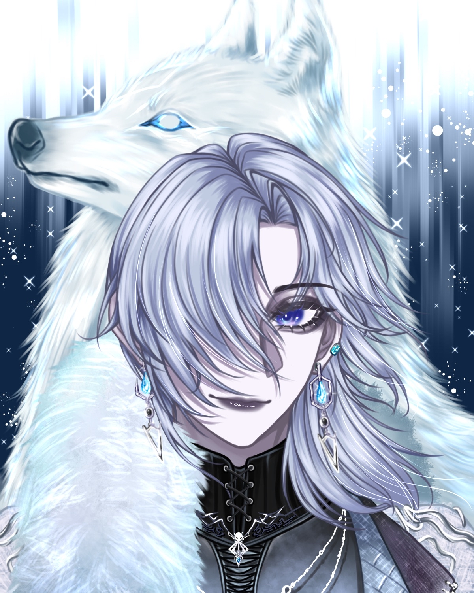
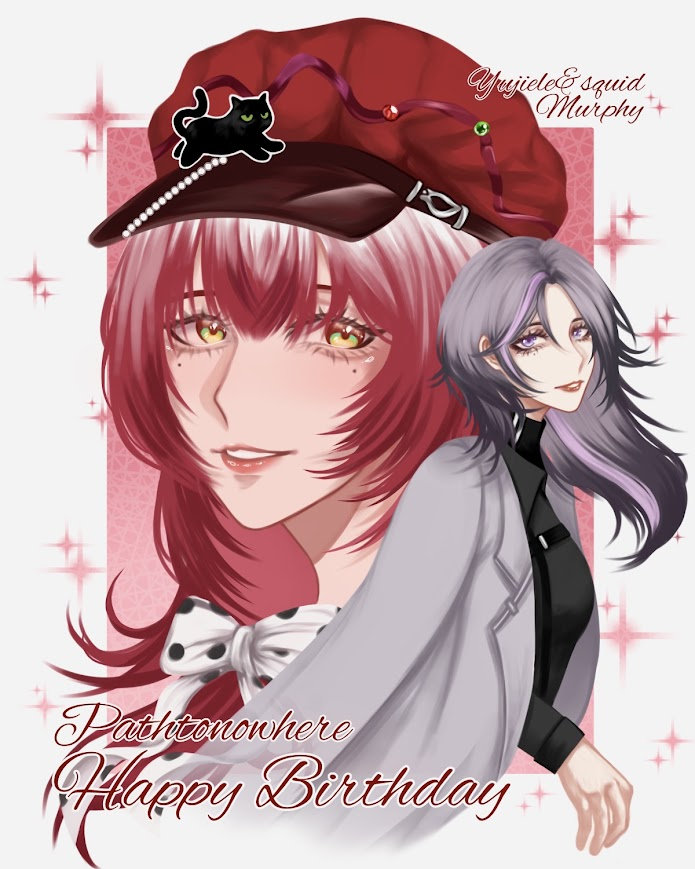
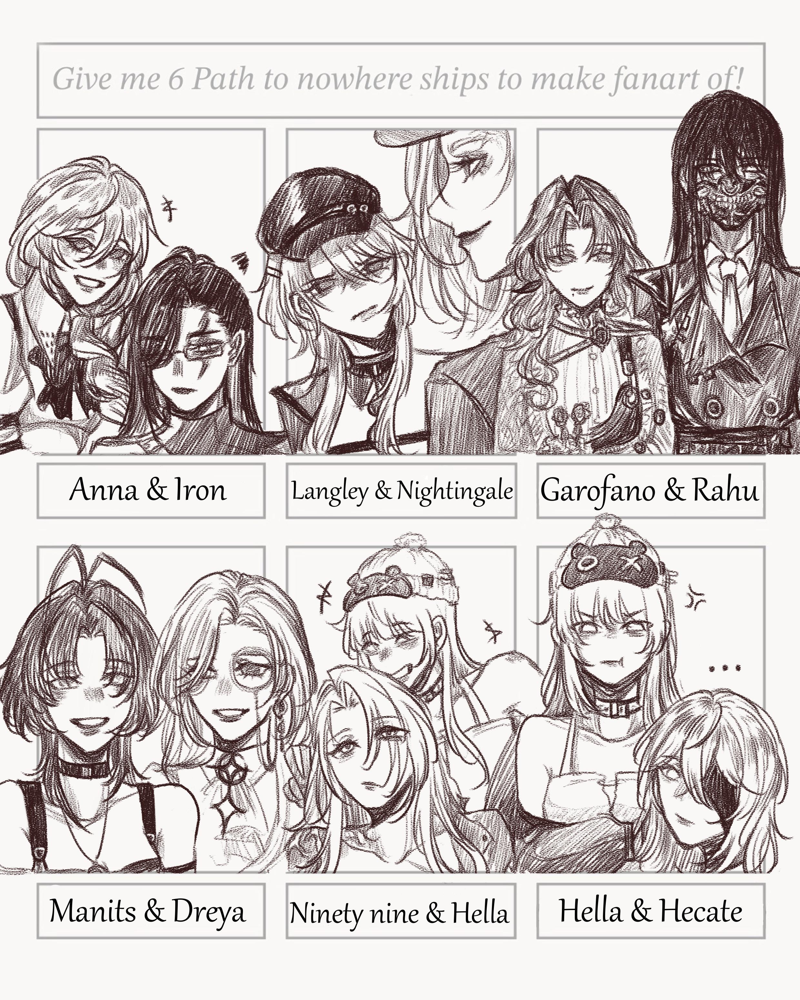
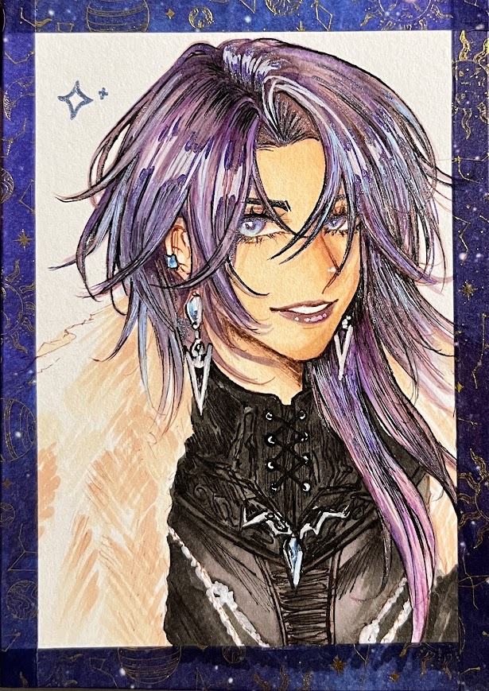
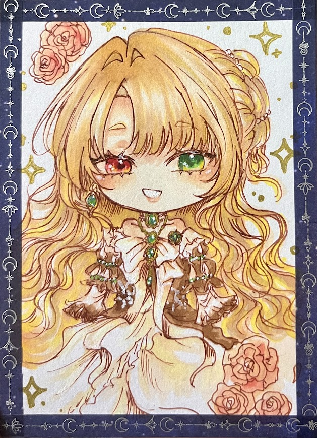
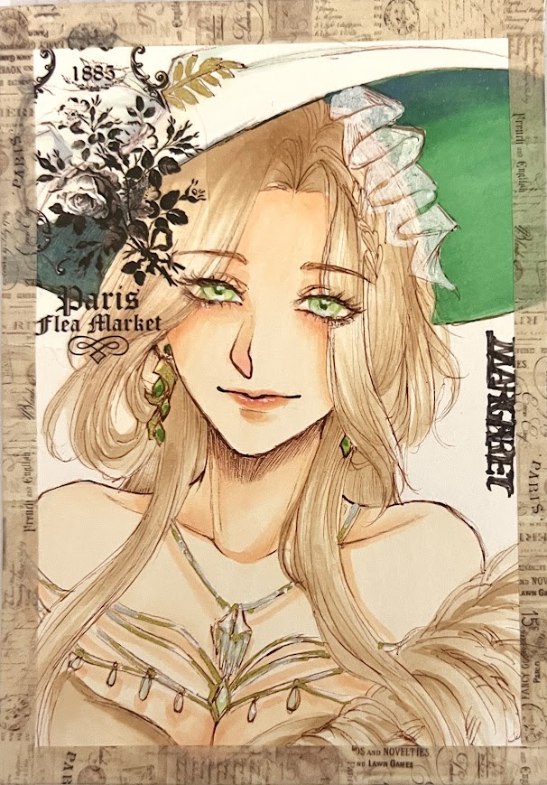

一位喜愛傳統手繪與數位繪圖的創作者。平時最大愛好是睡覺、畫圖、聽歌。 特別熱愛代針筆在紙張劃過的觸感，熱衷於蒐集各式各樣的紙膠帶與小貼紙。 以筆尖捕捉靈感，用每一張畫作構築心中的奇幻世界。

Illustrator & Animation Student
Digital Art
Ink & Paper
Washi Tape
從小生活的環境造就了:性格還算好、包容性高、擅長傾聽的我，抱持著活一天是一天，對所有事保持著佛系的態度。
我是烏賊，也可以叫我5J。目前就讀於台南應用科技大學 多媒體動畫系。 畫畫不是一項刻意修飾的技能，而是一種生活習慣與表達方式。自認沒有特別專精的神技，但只要握起筆，便能進入專注且平靜的宇宙。
特別著迷於代針筆劃過紙張時細密的阻尼感與觸感。 從細緻的輪廓線到緊密的交叉排線，每一個墨點與筆鋒都無法Ctrl+Z撤銷，這份不可逆的純粹，賦予了手繪獨一無二的靈魂與生命力。
非常喜歡收集圖樣繁複美麗的紙膠帶與風格各異的小貼紙。 在手繪紙稿或手帳頁面中，將色彩斑斕的膠帶與貼紙隨性撕貼拼疊，與黑白墨線碰撞出奇妙的視覺層次，是我日常創作中最療癒的時刻。
最簡單的三大愛好：睡覺、畫圖、聽歌。 充足的睡眠孕育奇幻夢境，耳機裡流淌的旋律則引領線條前行。每一幅插畫的誕生，背後都有一首單曲循環播放的專屬回憶。
融合傳統手繪質感與數位視覺美學的多面向創作方式。
專注於排線疏密、結構張力與黑白留白，保留紙本原稿的細微筆觸。
生動的人物五官刻劃、服裝配飾與性格氛圍，賦予角色鮮明立體的故事感。
結合紙膠帶花色、特殊貼紙紋理與墨線，打造富有趣味性與手作質感的視覺拼貼。
結合多媒體動畫專業背景，探索鏡頭視角、角色動態與故事板概念設計。
點擊作品卡片可放大檢視高解析度原圖與創作細節。

數位插畫色彩光影練習，探索色調在人物與背景之間的氛圍過渡。
數位完稿的角色形象設計，清晰利落的線條配合個性鮮明的二次元造型。

二創概念插圖，以玩家視角勾勒充滿情緒厚度的畫面故事張力。

使用代針筆在紙本上完成的手繪線稿，每一道線條都帶著手作溫度。

代針筆人物肖像手繪，細細雕琢神態與髮絲流暢感，呈現安靜優雅的氣息。

古典氛圍手繪墨線創作，深入運用黑白明暗對比，展現古典插畫的厚重魅力。
以實際創作作品為階段節點，回顧我從代針筆手繪黑白線條，步步跨入數位二次元角色設計與多媒體動畫創作的成長軌跡。
從最初握起代針筆開始，便被筆尖劃過紙面時沙沙的摩擦阻尼感深深吸引。在這個階段，以大量人物肖像速寫（如《Hypatia 伊帕希婭》）與精緻黑白交叉排線（如《Margaret 瑪格麗塔》）為重心。代針筆不可撤銷的特性，鍛鍊了對手部線條穩定度、筆觸明暗疏密與大膽留白節奏的敏銳直覺。
以《Hypatia 伊帕希婭》與《Margaret 瑪格麗塔》為核心，純手工代針筆反覆描繪，培養不可逆排線手感與結構明暗。
二創角色 Zoya ，結合個人對繁花紙膠帶與小貼紙的熱忱，在手帳本中大膽拼貼，賦予平面紙張手作溫度。
進入大學接觸繪圖板與 CLIP STUDIO PAINT，以《星夜記憶・5732》探索數位冷暖光影渲染與氛圍烘托。
將紙本 Zoya 數位化重塑，透過向量修線與個性化服飾配件，建立角色立繪。
在台南應用科技大學多媒體動畫系研習分鏡、鏡頭語言與敘事剪輯，以《57 原創概念》串聯角色與世界觀深度。
從實體文具到數位軟體，構成我創作日常的夥伴們。